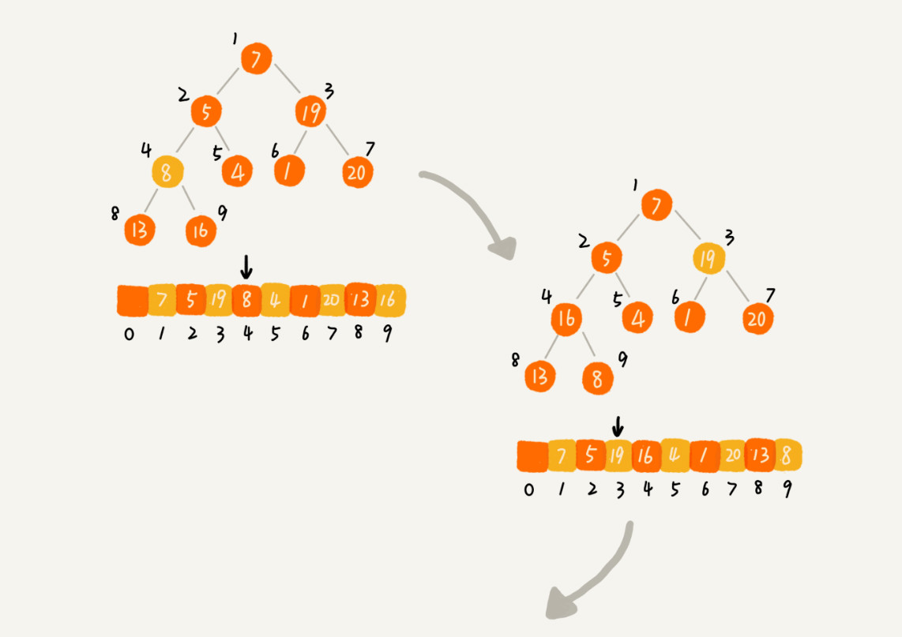

堆和堆排序
为什么说堆排序没有快速排序快？
堆排序数据访问的方式没有快速排序友好
对于快速排序来说，数据是顺序访问的。而对于堆排序来说，数据是跳着访问的。这样对CPU不友好。
对于同样的数据，在排序过程中，堆排序算法的数据交换次数要多于快速排序
如何理解“堆”？
“堆”必须满足两点：
- 必须是完全二叉树
- 每一个节点都必须大于等于（小于等于）其左右子节点
如何实现一个堆？

从图中我们可以看到，数组中下标为 i 的节点的左子节点，就是下标为 2i 的节点，右子节点就是下标为 2i+1 的节点，父节点就是下标为 i//2 的节点。
往堆中插入一个元素
把新插入的元素放在最后，然后进行 堆化。
自底向上堆化


删除堆顶元素
方法：将末尾节点填充至堆顶，然后自顶向下堆化。这样可以避免数组空洞。

一个包含 n 个节点的完全二叉树，树的高度不会超过 log2n。堆化的过程是顺着节点所在路径比较交换的，所以堆化的时间复杂度跟树的高度成正比，也就是 O(logn)。插入数据和删除堆顶元素的主要逻辑就是堆化，所以，往堆中插入一个元素和删除堆顶元素的时间复杂度都是 O(logn)。
如何基于堆实现排序？
建堆
第一种是借助我们前面讲的，在堆中插入一个元素的思路。
尽管数组中包含 n 个数据，但是我们可以假设，起初堆中只包含一个数据，就是下标为 1 的数据。然后，我们调用前面讲的插入操作，将下标从 2 到 n 的数据依次插入到堆中。这样我们就将包含 n 个数据的数组，组织成了堆。
第二种实现思路，是从后往前处理数组，并且每个数据都是从上往下堆化。
以下为例图，从第一个非叶子结点开始堆化


建堆时间复杂度分析
O(n)
排序
堆顶元素与最后一个元素交换，当堆顶元素移除之后，我们把下标为 n 的元素放到堆顶，然后再通过堆化的方法，将剩下的 n−1 个元素重新构建成堆。堆化完成之后，我们再取堆顶的元素，放到下标是 n−1 的位置，一直重复这个过程，直到最后堆中只剩下标为 1 的一个元素，排序工作就完成了。

因为存在堆顶元素与为元素交换的操作，所以堆排序是不稳定的排序
排序时间复杂度分析
O(logn)
总体时间复杂度分析
O(blogs)
思考
关于堆，你还能想到它的其他应用吗？
1、从大数量级数据中筛选出top n 条数据； 比如：从几十亿条订单日志中筛选出金额靠前的1000条数据
2、在一些场景中，会根据不同优先级来处理网络请求，此时也可以用到优先队列(用堆实现的数据结构)；比如：网络框架Volley就用了Java中PriorityBlockingQueue，当然它是线程安全的
3、可以用堆来实现多路归并，从而实现有序，leetcode上也有相关的一题：Merge K Sorted Lists
本博客所有文章除特别声明外，均采用 CC BY-SA 4.0 协议 ，转载请注明出处！